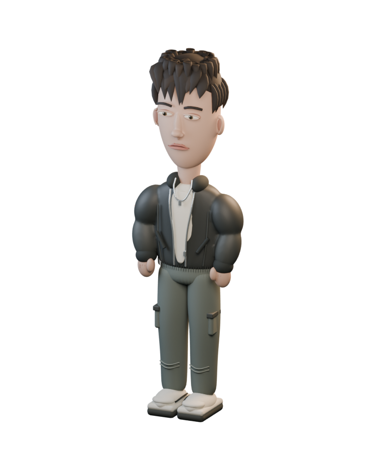

01
Hydra-4421
Školní projektWelcome to the Game 2 převedené do vlastního webového projektu. Simulovaný desktop, fiktivní weby a hledání klíčů proti času.
CREATIVE DEVELOPER / ZLÍN, CZ
Trocha kódu.
Hodně zvědavosti.

Tvořím weby a hry, které zvou k objevování. Zajímá mě, jak se dobrý nápad promění ve funkční zážitek.
Moje vybrané práce ↗01 / VYBRANÉ PROJEKTY
Od simulovaného desktopu
po skutečná serverová data.
Tohle je moje práce.
Welcome to the Game 2 převedené do vlastního webového projektu. Simulovaný desktop, fiktivní weby a hledání klíčů proti času.
Maturitní projekt pro hráče a správce Rust serverů. Aktuálně vyhledávání, filtrování a připojení k serverům s daty ze Steamu.
02 / NĚCO O MNĚ
Jsem Milan. Studuji vývoj multimediálních aplikací a PC her na Creative Hill College ve Zlíně. Propojuji programování, design a zájem o hry.
Nejvíc mě baví projekty, ve kterých se něco děje — uživatel objevuje, zkouší a má důvod pokračovat. Právě teď to zkouším na svém maturitním projektu monument.gg.
HTML / CSS / JavaScript / React / TypeScript
C# / Unity / Blender / Figma
03 / KONTAKT